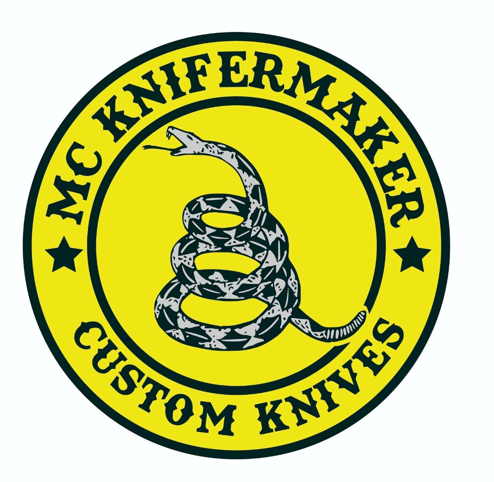
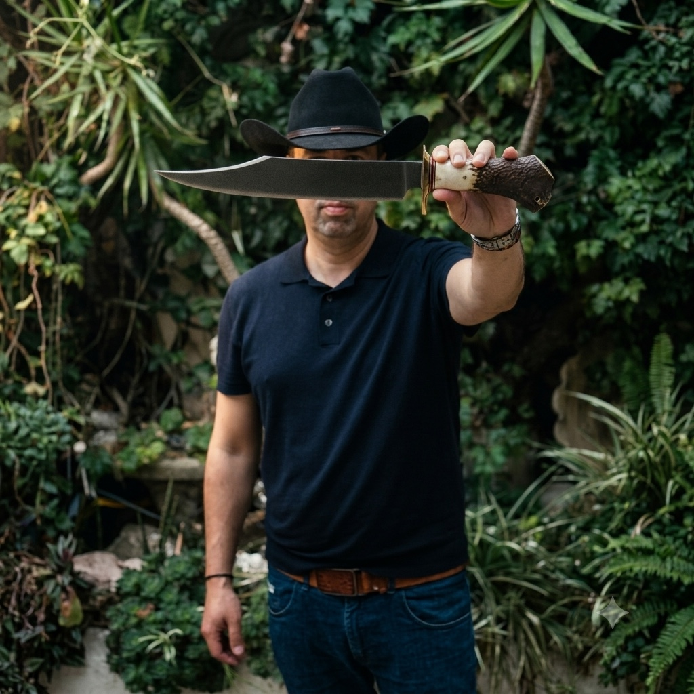
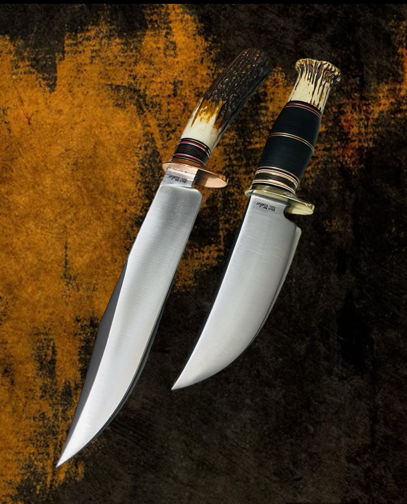
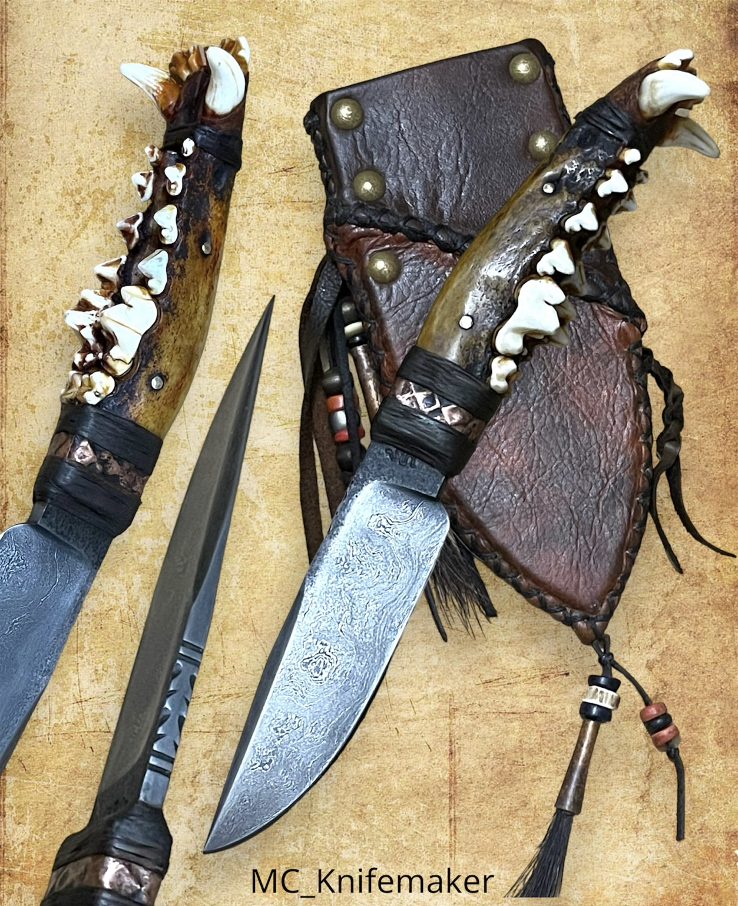
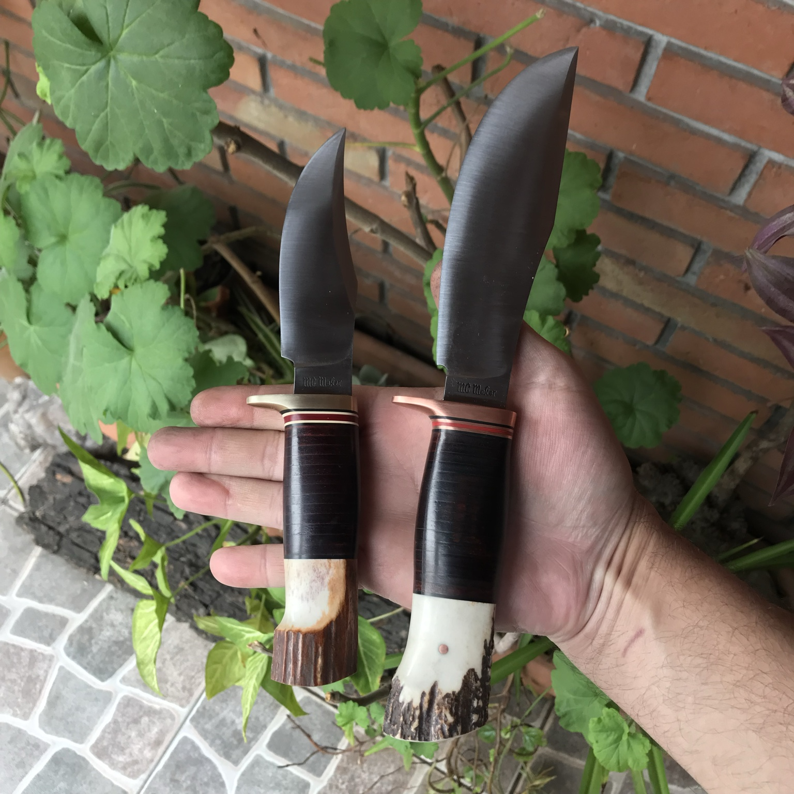
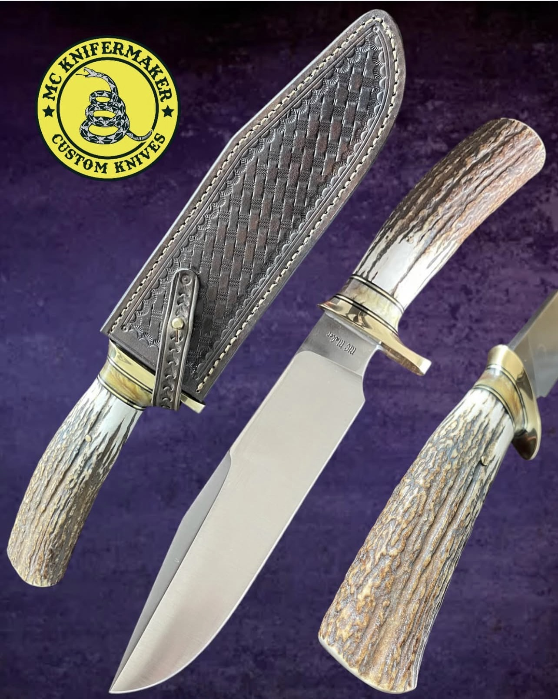
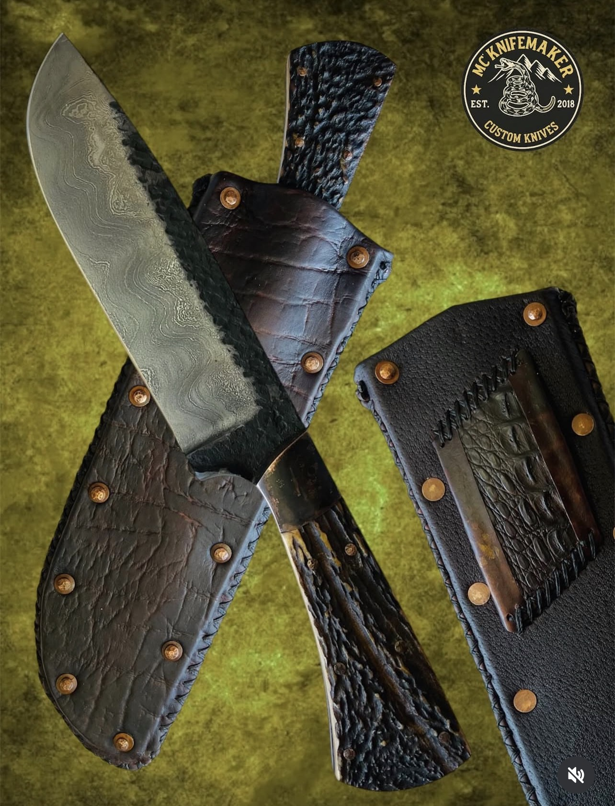
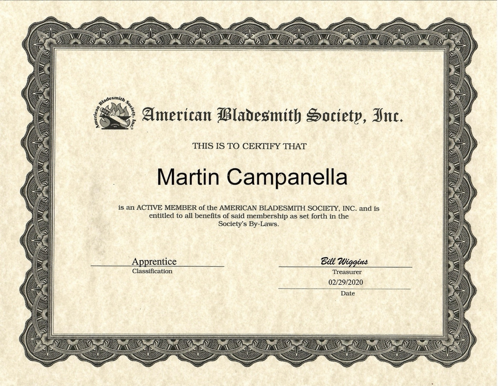
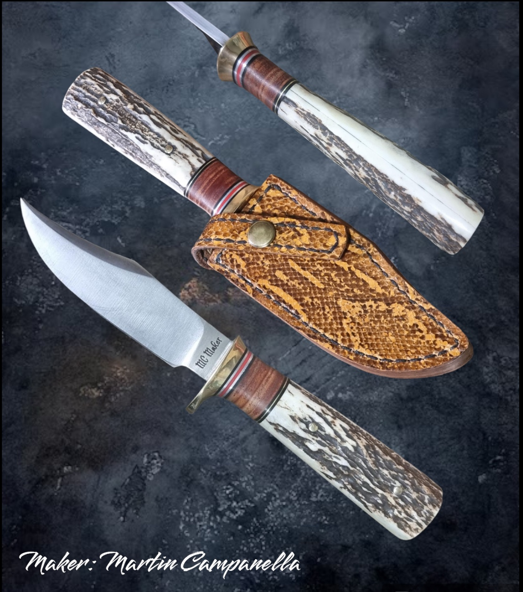

Keep the blade clean & dry
After use, wipe the blade clean and dry it thoroughly. Do not leave moisture, food residue or dirt on the steel.

MC KNIFEMAKER
Knifemaker & Leathersmith
Custom handmade knives for hunting, camping, skinning and the outdoors — crafted with traditional bladesmithing techniques.
Every knife and sheath is crafted, ground, heat treated and hand finished in my shop.
Traditional forms, natural materials and a strong connection to the outdoors.







My name is Martin Campanella, a part-time knifemaker and leathersmith from Buenos Aires, Argentina. I have had a passion for knives for as long as I can remember.
I am an active member of the American Bladesmith Society, with an Apprentice classification. My work has been developed in my shop since 2018.
Randall Made Knives · William Scagel · Marbles Knives · Harry Morseth · Ruana Knives · Bill Bagwell · Daniel Winkler · John Cohea · Chuck Burrows
Active member of the American Bladesmith Society.


Handmade leather sheaths designed to protect the blade and carry the same handcrafted character as the knife itself.
Custom sheath work is available together with custom knife commissions.
Handmade knives are made to be used, but they also deserve proper care. A few simple habits will help preserve the blade, handle and leather sheath.
After use, wipe the blade clean and dry it thoroughly. Do not leave moisture, food residue or dirt on the steel.
For carbon and non-stainless steels, apply a very light coat of suitable protective oil before storage. A clean, dry blade is the best defense against corrosion.
Natural materials such as antler and wood should not be soaked or exposed to prolonged heat, excessive humidity or sudden temperature changes.
Leather is a natural material. Keep the sheath dry, avoid prolonged contact with water and allow it to dry naturally if it becomes wet.
For long-term storage, keep the knife in a dry, ventilated place. If the blade is carbon steel, avoid storing it for extended periods inside a leather sheath.
A knife is a cutting tool. Avoid prying, twisting, chopping inappropriate materials or striking the blade against hard objects.
Contact MC Knifemaker to discuss a custom knife or sheath.